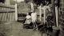
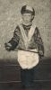
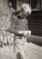
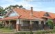
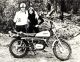
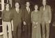
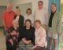

EAMER, John Geoffrey
-
Name EAMER, John Geoffrey Born 18 Dec 1948 Midland Junction, Western Australia, Australia 
Gender Male Unique Id CD69C0FFDA454BD88AE940F3E460124A7D2B Person ID I655 Tree One Last Modified 27 Apr 2021
Father EAMER, Jack, b. 30 Aug 1910, Nannine, Western Australia, Australia , d. 16 Nov 1977, Midland Junction, Western Australia, Australia (Age 67 years) Mother DONOHOE, Jean Ursula, b. 17 May 1915, Perth, Western Australia, Australia , d. 28 Apr 1980, Perth, Western Australia, Australia (Age 64 years) Married 16 May 1947 Midland Junction, Western Australia, Australia Family ID F145 Group Sheet | Family Chart
Family 1 DAWSON, Lynette May, b. 21 Aug 1951, Pinjarra, Western Australia, Australia (Age 74 years) Married 14 Jul 1973 Cannington, Western Australia, Australia Divorced 19 Jan 1981 Last Modified 27 Aug 2007 Family ID F184 Group Sheet | Family Chart
Family 2 SALMON, Michelle Susan, b. 14 Oct 1963, Singapore (Age 62 years) Married 20 Aug 1987 Victoria, Seychelles Divorced 21 Feb 2017 Parramatta, NSW, Australia Children 1. EAMER, Casey Morgan, b. 17 Jun 1997, Blacktown, New South Wales, Australia (Age 29 years)Last Modified 12 May 2021 Family ID F185 Group Sheet | Family Chart
Family 3 SOMWONG, Rungfha (Krittaporn), b. 30 Jul 1979, Chiang Rai, Thailand (Age 46 years) Married 16 Dec 2016 Chiang Mai, Thailand Type: De-Facto Last Modified 27 Apr 2021 Family ID F69 Group Sheet | Family Chart
-
Event Map  = Link to Google Earth
= Link to Google Earth Pin Legend  : Address
: Address
 : Location
: Location
 : City/Town
: City/Town
 : County/Shire
: County/Shire
 : State/Province
: State/Province
 : Country
: Country
 : Not Set
: Not Set
-
Photos John Geoffrey Eamer
First photo . 1949
Lucy Willows with grandson John Eamer
Taken in the front yard of 12 Helena Street, Midland Junction c 1949
The 'Eamer Girls'
L-R: Jean Eamer (Donohoe) holding John Geoffrey Eamer, Dorothy Eamer, Lucy Addis Eamer and Lucy Eamer (Willows) seated.
Robert and John Eamer 
Same aged cousins
L-R: Michael Thynne, John Eamer
John and Robert (in pram)
Freshly bathed and clean dressed!!Jean Donohoe and sons
L-R: Robert Eamer, Jean Donohoe, John Eamer
John Geoffrey Eamer
First Fancy DressJohn Geoffrey Eamer
School shot 1957John Geoffrey Eamer
School shot 1958
John Geoffrey Eamer
Growing up - 1960
12 Helena St, Midland Junction, West Australia
Location of McGregor's Transport Company and family home of two generations of the EAMER family.Back Row - Middle
Cousin Lorraine Beer's 21st Birthday partyJohn Geoffrey Eamer
Taken 11th Feb.,1967John Geoffrey Eamer
Wheat Bin AttendantJohn Geoffrey Eamer
Taken when working for Price Waterhouse & Assoc., in the field at Tutt Bryants .. June, 1868
John Geoffrey Eamer - Lynette May Dawson
Taking a break after doing some trail riding!
Jack Eamer and Jean Donohoe with their three sons.
L-R: Brian Thomas Eamer, Jack Eamer, John Geoffrey Eamer, Jean Ursula Donohoe, Robert Gordon Eamer.John Geoffrey Eamer
Sales RepresentativeCpt Eamer JG
Chief Pilot Check and Training - Avior Airlines, Perth, WA
Groups/EamerJG+SalmonMS1989.jpg
Taken in Templestowe Melbourne ... Ray Nott's 40th birthday celebration.
Groups/EamerJG+MS_Family1997.jpg
Taken at Kings Langley Primary School ... Xmas of 1997
Me n K
Silverdale ...
Oh dear its Santa!
John plays Santa at Casey's school at St Madelein's Primary School during the pre Xmas Arts Festival, 2005 - while Mum watches on. [KC did not know it was her Dad playing Santa!]John Geoffrey Eamer
Taken June 2007John Geoffrey EAMER - 2010 John Geoffrey Eamer
Taken at Glenhaven, NSW - May 2008
Second Cousins
Descendants of John Willows and Eleanor SpencerJohn Eamer - 2012 John Geoffrey Eamer
68 yrsEamer-Kumada Family
At Ell's family home in ChiangRai - Apr 2019John and Elle
Songkran festival 2019 - ChiangRaiJohn and Elle
Songkran festival 2019 - ChiangRai, Thailand.John and Elle Eamer-Kumada Family
Celebrating Elle's 40th birthday - Tattersalls Hotel - PenrithJohn and Elle
Outside the Fremantle Markets, Western Australia Oct 2020Eamer-Kumada Family
Family shop Perth foreshore - Jan 2020John and Elle
Inside "London Court", Perth, Western Australia - Jan 2020John and Elle
In Kings Park Perth, Jan 2020John and Elle
Visiting the "Gravity Discovery Centre", Perth, Western Australia - Jan 2020John and Elle
Araluen Botanic Park, Roleystone WA - Jan 2020Eamer-Kumada Family
In the lounge room at Station Street - Dec 2020John and Elle
Waiting for a train at the 'Light Rail' station for the Sydney Fish MarketsEamer-Kumada Family
John's 72nd birthday - Tattersalls Hotel - Penrith
Casey Morgan Eamer
With Mom and Dad at the 'Greek Ruins' in Agrigento, Sicily, Italy
Casey Morgan Eamer
With Mom and Dad on my 8th birthday.Casey Morgan Eamer - with Brian Eamer and Dad
The day i met Uncle Brian.
-
Notes - b:18.12.1948 St Andrews Hospital, MIDLAND WA
NOTES by Denis Hamilton - UK
===================
Met John on the 2 July 1987 at the home of my neice Shirley Ann BALL, 38, Brighton Road, Reading, Berkshire - I travelled up to Reading from Eastbourne on the train. John had brought along his young lady friend Michelle - they were staying at a friends home in Hatfield, Herts and were off to Tasmania the next day. He had photostating equipment with him and took photostats of many of the EAMER/EDWARDS documents Shirley held. John gave very scant info on his family but seemed more than pleased to receive ours!! - he said his brother Robert had all the family info as he had been researching the Family Tree and he would get him to forward details to us - we left it at that and was more than disappointed when info did not arrive - so I wrote to Robert but he never replied.Took a photograph of John outside Shirley's home which is in the large EAMER File [toward back].
Letter received from Alan EAMER dated 14 February 1995 states that John is now living in New South Wales, Australia.
Entered 9.10.2004:- From White Pages, Australia. There is this entry:- EAMER J., 71 Reserve Road, Grovedale, Victoria 3216 - Tel: [03] 5243 2567 - is this this John.
15.2.2006:- Contact from John Geoffrey EAMER through GenesReunited. Sent a reply Message.16.2.2006:- E Mail reply with a letter Attachment - went onto Website http://au.geocities.com/eamerclan/gtree/ and found John's F. Tree - printed off with other info and filed in James EAMER Large Ring Binder File. Sent copies to neice Shirley & Jackie BALL.
- b:18.12.1948 St Andrews Hospital, MIDLAND WA